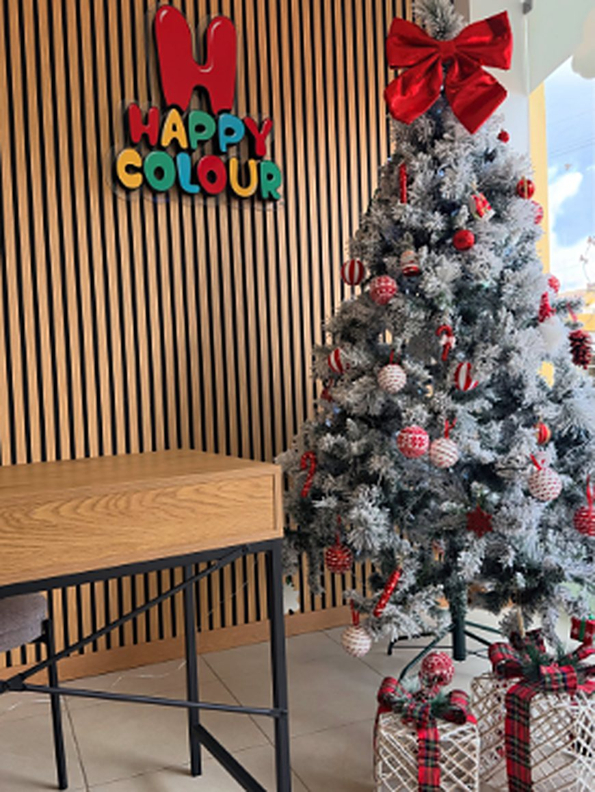
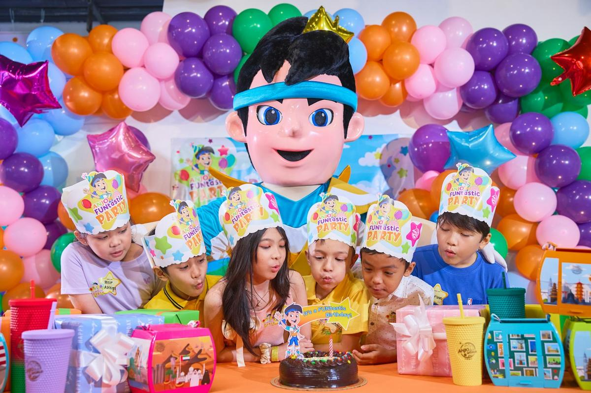
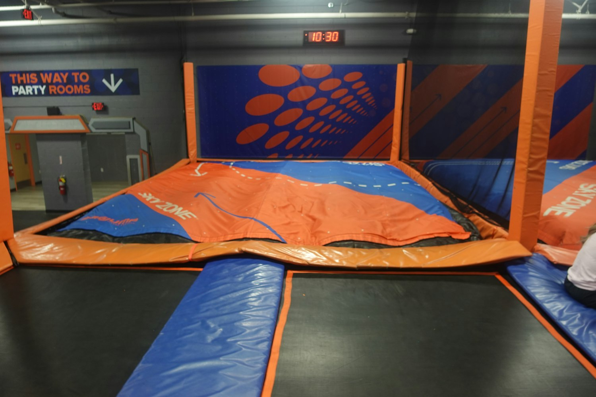

O que vais querer?
Toca nos balões para os encher. Nós montamos a mensagem.
Enviar por WhatsApp
Espreita lá dentro
Fotografias ilustrativas · desliza para o lado

Natal no Happy Colour Insufláveis
Insufláveis
Festas
Trampolins Ateliers
Ateliers Arco de balões
Arco de balões